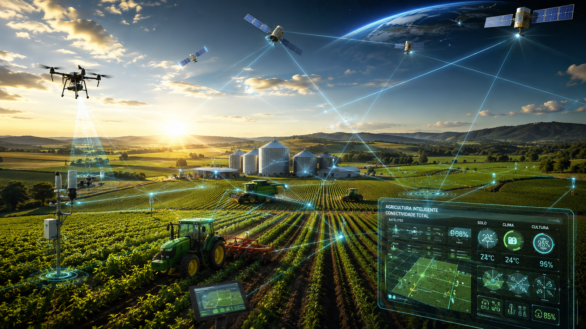

PESQUISA FUTURA
Orbital Sensing
Avaliar imagens de observação da Terra para contextualizar áreas de cultivo, com fontes verificáveis e interpretação técnica.
A PROPOSTA
O AetherAgri: Gaya-Link preserva a visão de uma agricultura conectada e começa por uma necessidade concreta do pequeno produtor. A primeira versão responde a uma pergunta: quais talhões merecem uma vistoria primeiro?
Abrir a demonstração →O QUE VOCÊ PODE TESTAR
O painel apresenta 12 registros fictícios com cultura, município, área, umidade e chuva. É possível filtrar a lista, ordenar prioridades e escolher um talhão para comparar cenários.
Ao analisar um cenário, você recebe uma classificação e sua explicação. Alterar a chuva ou a umidade muda o resultado de forma previsível.
O objetivo é organizar observações. Os limites usados são didáticos: não representam um diagnóstico agronômico e não definem quanto irrigar.
HORTA DO IPÊ22% umidade · 3 mm chuvaPrioridade alta · simulação
A VISÃO AETHERAGRI
A identidade Space-Agri continua no projeto. Estes pilares orientam possibilidades de evolução; a versão que você pode testar usa registros locais e regras explicadas.
PESQUISA FUTURA
Avaliar imagens de observação da Terra para contextualizar áreas de cultivo, com fontes verificáveis e interpretação técnica.
PESQUISA FUTURA
Estudar sensores e conectividade adequados ao território, preservando a possibilidade de consultar informações sem rede contínua.
PESQUISA FUTURA
Investigar modelos somente após obter dados confiáveis e validação técnica. Hoje, o painel usa regras didáticas transparentes.
A EXPERIÊNCIA NO CAMPO
Consulte o painel no computador ou no celular. Filtros, seleção de talhões e explicações continuam disponíveis em telas menores.
Esses exemplos usam o mesmo registro fictício da demonstração. Abra o painel para experimentar a interação real.
Experimentar a navegação →GAYA-LINK / ÁREAS
Ibiúna · Hortaliças
Prioridade alta22% de umidade · 3 mm de chuva
Dados fictícios
GAYA-LINK / CENÁRIO
Com a mesma umidade de 22%, o cenário pede outra observação.
Exemplo didático
QUEM PARTICIPA
Observa a área, interpreta o contexto e decide o que precisa ser acompanhado.
Em uma implantação futura, ajudaria a definir critérios confiáveis para cada cultura e território.
Poderiam apoiar capacitação e acesso à ferramenta. Essas parcerias ainda são propostas, não acordos firmados.

HOJE E DEPOIS
Hoje: HTML, CSS e JavaScript executados no navegador, com dados locais, filtros, simulação, acessibilidade e formulário demonstrativo.
Depois: pesquisar as necessidades com produtores, validar as regras com profissionais e avaliar dados meteorológicos oficiais e sensores, com consentimento e proteção de dados.
O protótipo atual não se conecta à NASA, não possui inteligência artificial preditiva e não lê sensores.